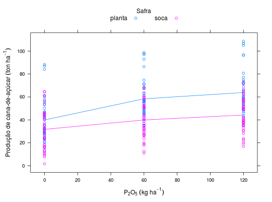
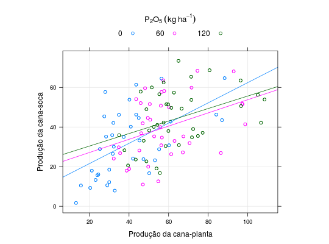

Conjunto de 38 ensaios fatoriais de \(3^{3}\) com N, P e K, em cana-de-açúçar, com dados de cana-planta e soca, obtidos por Strauss (1951). O nutriente foi aplicado nas doses de zero, 60 e 120 \(kg.ha^{-1}\) de \(P_2O_5\), só na cana-planta.
Um data.frame com 228 observações e 4 variáveis, em
que
safraPproduePIMENTEL-GOMES (2009), Tabela 13.5.1, pág. 259.
library(lattice) data(PimentelTb13.5.1)#> Warning: data set ‘PimentelTb13.5.1’ not foundstr(PimentelTb13.5.1)#> 'data.frame': 228 obs. of 4 variables: #> $ safra: Factor w/ 2 levels "planta","soca": 1 1 1 1 1 1 1 1 1 1 ... #> $ P : num 0 0 0 0 0 0 0 0 0 0 ... #> $ prod : num 60.2 40.9 29 61 84.1 15.7 50.2 87 88.3 42 ... #> $ ue : int 1 2 3 4 5 6 7 8 9 10 ...xyplot(prod ~ P, groups = safra, auto.key = list(title = "Safra", cex.title = 1, columns = 2), type = c("a", "p"), data = PimentelTb13.5.1, ylab = expression("Produção de cana-de-açúcar"~(ton~ha^{-1})), xlab = expression(P[2]*O[5]~(kg~ha^{-1})))da <- reshape2::dcast(data = PimentelTb13.5.1, formula = ue ~ safra, value.var = "prod") str(da)#> 'data.frame': 114 obs. of 3 variables: #> $ ue : int 1 2 3 4 5 6 7 8 9 10 ... #> $ planta: num 60.2 40.9 29 61 84.1 15.7 50.2 87 88.3 42 ... #> $ soca : num 30.8 40.2 10.6 42.7 46.3 10.5 16.7 43.5 64.7 24.1 ...da <- merge(da, PimentelTb13.5.1[, c("ue", "P")], by = "ue", all.x = TRUE, all.y = FALSE) xyplot(soca ~ planta, groups = P, data = da, type = c("p", "r"), aspect = "iso", grid = TRUE, xlab = "Produção da cana-planta", ylab = "Produção da cana-soca", auto.key = list(title = expression(P[2]*O[5]~(kg~ha^{-1})), cex.title = 1.1, columns = 3))